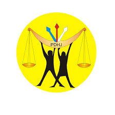

.jpg)
I am Rishi Aryal
.jpg)
Name: Rishi Aryal
Profile: IT Project Manager/Full Stack Developer/Data Analyst
Email: aryalrishi29@gmail.com
Skills
About me
I am an experienced IT Project Manager, Full Stack Developer and Data Analyst with over a decade in the IT and services industry. Proficient in databases, management, project and strategic planning, and capacity building. Holds a Masters in Information Technology from Indira Gandhi National Open University.
I have extensive hands-on experience in web development, project management, DevOps practices, Python programming, and Agile methodologies. My career includes leading teams and projects in Timor-Leste and Nepal, successfully developing management information systems and integrating payment solutions.
I am expert in strategic planning and Agile project management, ensuring efficient project delivery. Skilled in Python programming for scalable software solutions, and have enhanced organizational efficiency as an IT Consultant for various government and non-government agencies. Thrives in dynamic environments, excels in problem-solving, and builds strong stakeholder relationships.
I am committed to leveraging skills in Computer Science for digital transformation and sustainable growth, with a passion for continuous learning and development.
Resume
Education, Certifications, Key Skills, Achievements, Professional Attributes, Career Highlights and Professional Experiences:
Summary
Experienced IT Project Manager, Full Stack Developer and Data Analyst with over a decade of experience in the information technology and services industry. Proficient in web development, databases, project planning, strategic planning, and management. Skilled in DevOps practices, Python programming, data analysis, and Agile methodologies. Proven track record in driving innovative solutions and optimizing organizational performance across diverse environments in Timor-Leste and Nepal.
Education
Master of Economics
Delhi University, New Delhi, India
Master of Information Technology
Indira Gandhi National Open University, New Delhi, India
Bachelor of Information Technology
Indira Gandhi National Open University, New Delhi, India
Certifications
 Python For Everybody: Specialization
Python For Everybody: Specialization
University of Michigan -Issued May 2024
Key Skills
Web Development: Expert in developing robust web applications.
Database Management: Skilled in designing and managing databases to ensure data integrity and performance.
Project Management: Proficient in Agile methodologies and project planning to deliver projects on time and within budget.
Python Programming: Advanced skills in Python for developing scalable software solutions
DevOps Practices: Implementing DevOps strategies to improve collaboration and productivity in software development.
Strategic Planning: Crafting and executing strategic plans to drive organizational growth and innovation.
Data Analysis: Proficient in analyzing data to extract insights, support decision-making, and optimize processes.
Key Achievements
Successfully led 12 IT Projects with diverse teams to success, consistently delivering results that exceed expectations.
Spearheaded the development and integration of 20 management information systems and payment solutions, enhancing organizational efficiency.
Built strong relationships with stakeholders across government and private sectors, facilitating successful collaborations to delevor 4 python projects
Leveraged data analysis to identify opportunities for improvement and drive strategic initiatives for 7 data analysis projects.
Professional Attributes
Innovative Problem-Solver: Thrives on challenges requiring creative and effective solutions.
Dynamic Team Leader: Excels in dynamic environments, capable of leading diverse teams to achieve common goals.
Stakeholder Management: Demonstrated ability to forge strong relationships with stakeholders, driving successful collaborations.
Commitment to Learning:Passionate about continuous learning and development, ensuring skills and knowledge remain cutting-edge.
Data-Driven:Utilizes data analysis to inform strategies and decisions, ensuring evidence-based approaches.
Career Highlights
Over a decade of hands-on experience in the IT and services industry.
Proven expertise in strategic planning, project management, software development, data analysis, and project/program evaluation.
Significant contributions to digital transformation and sustainable growth in various organizations.
Professional Experience
Senior Project Manager
2019 - Present
Freelancer
- US Health Informatics Project • Working for US Based company as a remote worker for the development of various MIS that includes Project Manaagement Work for a US Health Sector focus on the Development of responsive web based application for a client in US.
Information Communication & Technology Specialist
May 2015 - August 2018
Human Rights Office (PDHJ), Timor-Leste
- ICT Procurement, Website Development and Training Package Development;
1. Development of training packages for administrator and user level staffs for smooth operation of eCMS.
2. Procurement of required ICT Equipment and services for the implementation of eCMS. Liaison with the maintenance Contract Company in relation to required updates, maintenance of the source code and bug fixes.
3. Decentralization of eCMS to regional level.
4. Development of robust website for Ombudsman office.
Information Communication & Technology Audit Specialist
August 2014 - April 2015
United Nations Development Program (UNDP), Timor-Leste
- eCMS Audit, sustainability and scalability of eCMS for effective E-Governance;
1. Conducted an audit of the PDHJ electronic case management system by an independent contractor including database in PostgreSql;
2. Liaised with the independent contractor to complete a list of required changes;
3. Ensured all required documentation is provided to PDHJ about the electronic case management system (including changes to the source code, final source code, manuals and the project design document);
4. Provisioned budgetary support for maintenance through the Ministry of Justice umbrella Integrated Management System;
5. Test and deploy the eCMS using Kubernetes.
Information System Consultant
October 2013 - July 2014
United Nation International Children Emergency Fund (UNICEF), Timor-leste
- Transition for paper based to ICT enabled Education Management System, Procurement of ICT equipment and Services and Capacity Development of ICT staffs
Analysis of EMIS for scalability and decentralization to school level at Ministry of Education (MOE), Timor-leste. Enhancement of the EMIS, feasibility assessment to integrate other EMIS related databases of MoE running on different platform into single platform for effective and hassle-free administration by one unit at MoE. Conduct necessary ICT Procurement of Goods and Services.:
1. Managed the Linux servers for email server, application server, proxy server and File servers at MoE and managed virtual servers ;
2. Developed Progressive Web Application for pre-school information management system using php and MySQL;
3. Reviewed the structural and functional aspects of the Education Management Information System (EMIS) to enhance the current EMIS for scalability and decentralization;
4. Designed a training package for the capacity building of EMIS staff to effectively administer and operate the system. Four system and sixteen data entry operators are being trained at MoE under this plan;
Case Management System Consultant
September 2012 - August 2013
United Nations Development Program (UNDP), Timor-Leste
- Development of electronic case management system to lodge public complaints on violation against human rights and good governance; Transition of complaint registry from paper based to ICT enabled platform, decentralization of eCMS, ICT procurement (goods and services) for eCMS implementation, development of ICT Policy and SOPs, user and administrative manual development, design of training packages for eCMS, provision of budget for sustainability and scalability of eCMS. ;
1. Documented PDHJ case handling work processes to develop the electronic case management system;
2. Led the planning, consultation and development of the browser base database system using django python and MS SQL Server to reflect the software development of electronic case management system and reporting needs of the Provedoria PDHJ;
3. Implemented electronic case management system in the PDHJ;
4. Provided mentoring and training to two IT officials in development and maintenance of client server database and IT network administration, email and internet, installation, maintenance and upgrading;
MIS Consultant
April 2012 - May 2013
The World Bank
- MIS development for Human Development Social Protection Pilot (HDSPP) Project; Assessment of information infrastructure and database and design MIS for HH level beneficiaries
1. Addressed the immediate MIS/IT needs for HDSSP pilot implementation,
2. Build a comprehensive MIS system (Software Development) with an aim to automating all Cash Transfer programs under the MoLD (except the Cash for Work program) into a single MIS IT platform thereby establishing a wide system. Key functions of the MIS system include: automating all Cash Transfer programs into a single MIS platform, maintaining an applicant and beneficiary database, generating eligible beneficiaries.
IT/MIS Consultant
July 2011 - March 2012
The World Bank
- Development of MIS for Social Protection Assistance Programme.
1. Develop technical and functional requirements for integrated MIS system and proposed technical and operational architecture of Integrated MIS system for Social Protection Assistant Program at the Ministry of Social Solidarity (MSS). Review the current information collection process, identify gaps in the current process and suggest improvements during the design and development of the Integrated MIS for SPAP at MSS. Evaluate and Identify the feasibility and operational process requirements for adopting technologies such as use of handheld devices, mobile payments etc inside the integrated MIS for SPAP at MSS.
ICT Consultant
November 2010 - June 2011
International Organization for Migration (IOM)
- Analysis and review of the existing operational process of the IDP and Disaster Risk Management Program of MSS
1. Assess and document the possible process gaps or overlaps with a set of key recommendations on the necessary changes in IDP (Internally Displaced Person) reintegration process. Develop a robust data management system to lodge the IDP complaints, enter the verification information, calculate the compensation based on the verification and generate the verification and payment reports for the IDPs
IT/Data Management Specialist
January 2007 - December 2007
Ministry of Health, Nepal
- Health Management Information System System Administration, Disaster recovery, Network Management, Patch Panel & network shelter Management, Panasonic PABX programming & Billing system Management Implemented Windows Server 2003 Active Directory, SQL Server, Exchange server, Virtual server, corporate antivirus etc.
Portfolio
Summary of Projects and Systems:

IT Projects Managed
Full Stack Systems Developed
Data Analysis Projects
Python Projects
Testimonials